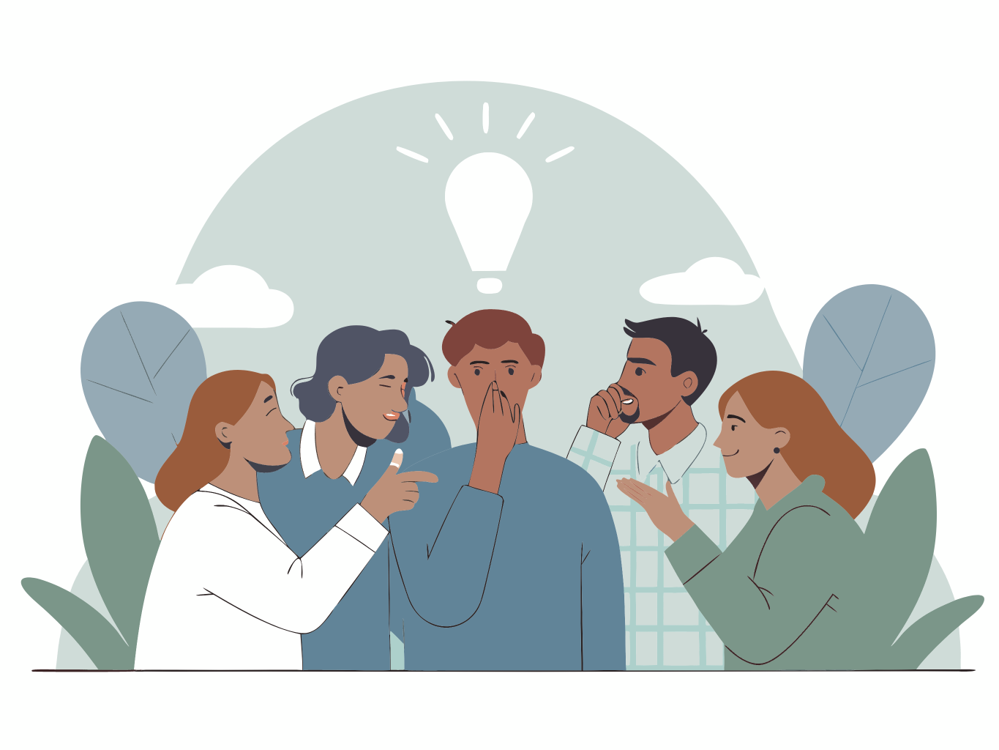
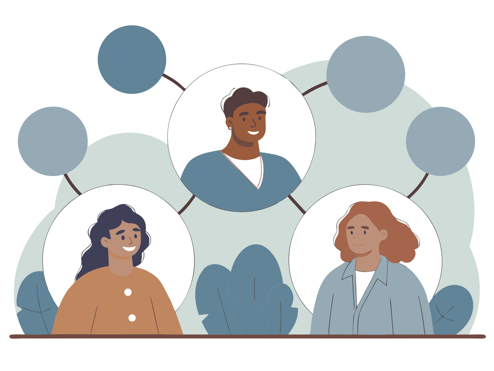
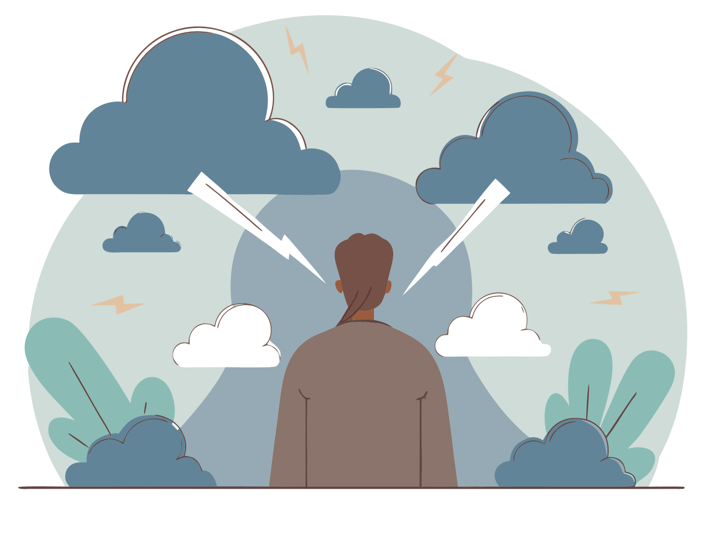
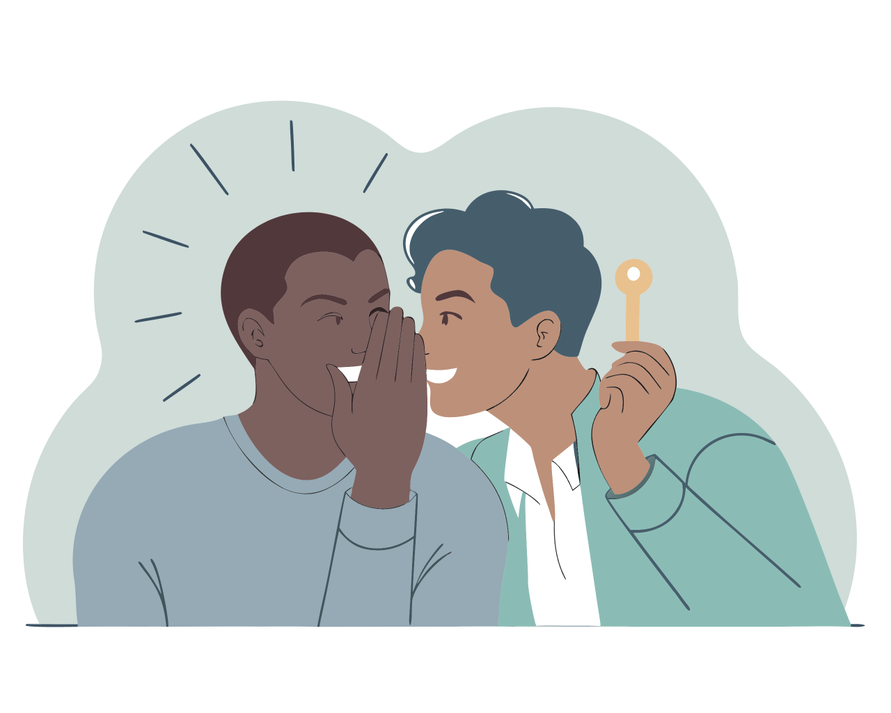
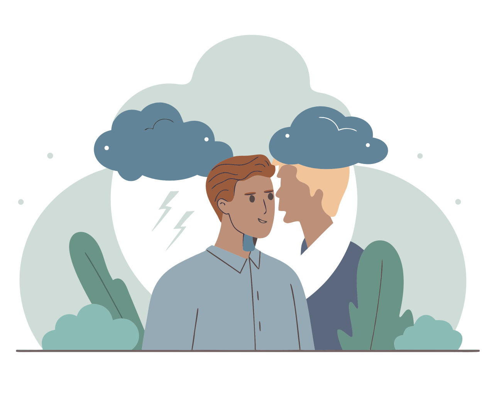
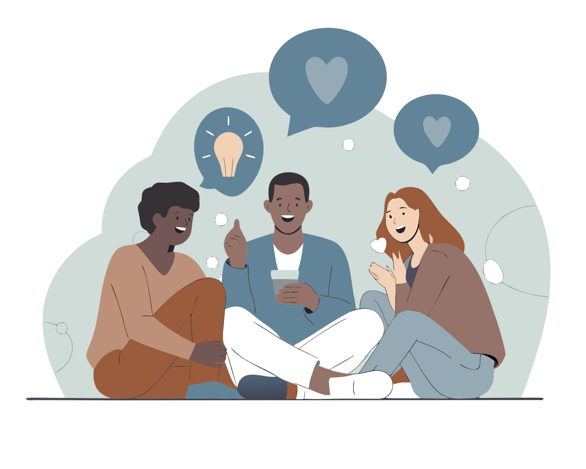
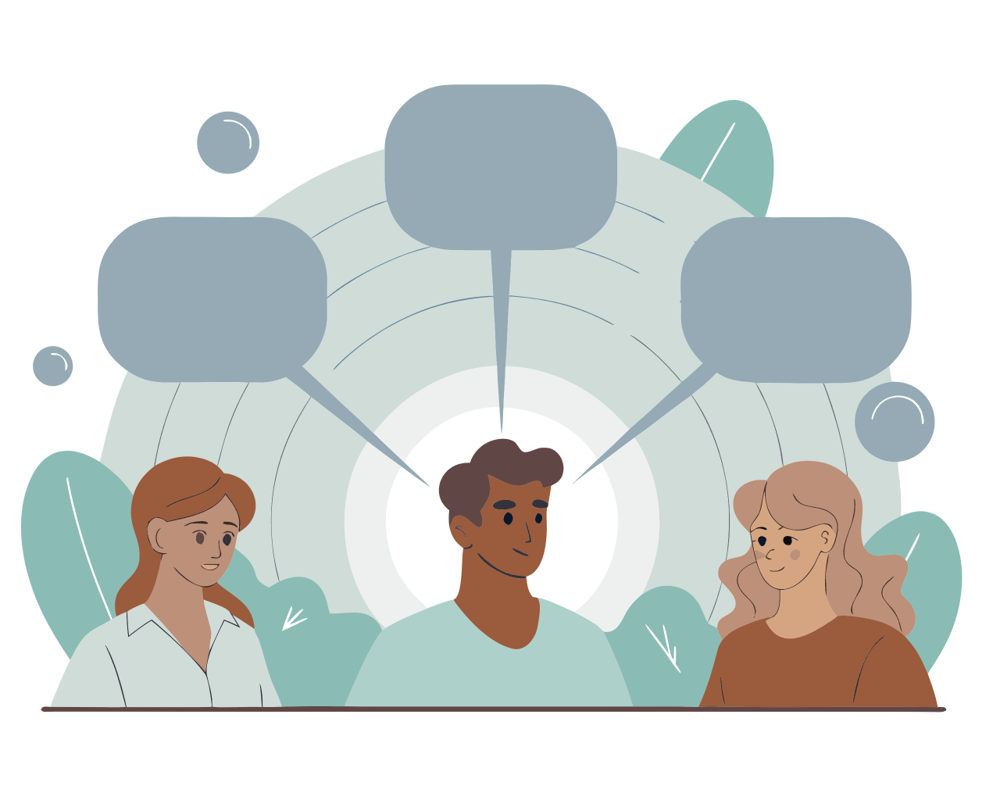

Why People Gossip
The Social Power of Shared Information

💭A. Warm‑up Questions
- Do you think spreading rumors about others harms relationships?
- How often do you share personal information about friends?
- Can gossip help people bond and feel closer to each other?
- Is it always harmful to talk about someone behind their back?
- What motivates people to share secrets they've been told?

📚B. Vocabulary Preview
- 1. rumors a. what people think about someone's character and behavior
- 2. harmful b. hidden information that shouldn't be shared with others
- 3. bond c. left out or not included in a group or activity
- 4. motivates d. creates strong emotional connections between people
- 5. secrets e. unproven stories passed from person to person
- 6. spreading f. encourages or drives someone to take action
- 7. reputation g. sharing information quickly with many people
- 8. excluded h. unity and support between group members
- 9. betrayal i. breaking trust by revealing private information
- 10. solidarity j. causing damage or negative effects to someone
📖Reading
The Hidden Social Function of Gossip
1. Most people view gossip negatively, but research reveals it serves important social purposes. When we share information about others, we're actually strengthening community bonds and establishing group rules without realizing it.
2. Gossip helps us learn social norms by discussing who behaves appropriately and who doesn't. When someone breaks social rules, talking about their actions teaches everyone what's acceptable behavior. This creates unofficial guidelines that keep communities functioning smoothly.

3. Sharing personal stories also builds trust between people. When friends exchange secrets or observations about others, they create deeper connections and show they trust each other with sensitive information. This bonding process helps form strong social networks.
4. However, gossip can become harmful when it spreads false rumors or damages someone's reputation unfairly. Some people use gossip to exclude others from groups or gain social power by controlling information flow. What motivates people to gossip determines whether it helps or hurts relationships.
5. Studies show that most gossip isn't actually mean-spirited. About 80% of conversations about others involve neutral or positive information. People often share good news, express concern for friends, or simply process social situations together. The key difference lies in intention and accuracy. Constructive gossip shares truthful information with genuine concern, while destructive gossip spreads lies or reveals private matters inappropriately. When people feel betrayed by broken confidences, it damages trust and solidarity within groups. Understanding this distinction helps us navigate social conversations more responsibly.
🧠Comprehension
- What positive social purposes does gossip serve according to research?
- How does sharing information about others help build trust?
- When does gossip become harmful to individuals and communities?
- What percentage of gossip involves neutral or positive information?
- What's the key difference between constructive and destructive gossip?
📝Vocabulary Review
1. False can quickly damage someone's career and relationships.
2. Sharing personal stories helps people and become closer friends.
3. Her was ruined after someone shared her private information.
4. What people to share information they promised to keep secret?
5. Some groups use gossip to keep certain members from activities.
✍️Grammar Review — Present Simple vs Present Continuous
1. People usually (gossip) about things that interest them.
2. She (spread) rumors about her colleague right now.
3. Trust (develop) when friends share personal information.
4. Why you (discuss) his private life with others?
5. Gossip (serve) important social functions in communities.
Transform these sentences from active to passive voice:
6. People spread rumors quickly in small communities.
Rumors quickly in small communities.
7. She shares secrets with her closest friends only.
Secrets with her closest friends only.
8. Gossip often damages people's reputations unfairly.
People's reputations often unfairly by gossip.
⚖Ethics Slider (not graded)
Rate 1–5 (1 = never OK • 5 = fully OK).
🎯Task A — Match the Headlines




Instructions: Match each picture (1–6) with a headline (A–F). Write your answers:
✅Additional Exercises
1. Types of Gossip Analysis
Categorize different forms of information sharing:
| Gossip Type | Purpose | Example Topics | Social Impact |
|---|---|---|---|
| Positive Gossip | _____________ | _____________ | _____________ |
| Neutral Gossip | _____________ | _____________ | _____________ |
| Negative Gossip | _____________ | _____________ | _____________ |
| Malicious Gossip | _____________ | _____________ | _____________ |
Discussion Questions:
• Which type is most common in your experience?
• How can you recognize harmful gossip patterns?
2. Gossip Motivation Analysis
Analyze what drives people to share information about others:
Positive Motivations:
• _________________________________
• _________________________________
• _________________________________
Neutral Motivations:
• _________________________________
• _________________________________
• _________________________________
Negative Motivations:
• _________________________________
• _________________________________
• _________________________________
Analysis Questions:
• What motivates you most when sharing information about others?
• How can understanding motivations help prevent harmful gossip?
3. Social Bond Building Through Gossip
Examine how gossip strengthens or weakens relationships:
Relationship Strengthening:
1. Trust building mechanisms: __________________
2. Shared experience creation: ____________________
3. Group identity formation: ___________________
Relationship Weakening:
1. Trust breaking behaviors: ____________________
2. Exclusion tactics: ____________________
3. Reputation damage effects: _________________
Social Implications:
• How does gossip affect group dynamics?
• What role does gossip play in social hierarchy?
🔐Answer Keys (toggle)
📋 Answers will only be visible in the PDF if you untoggle them before saving
Vocabulary Preview
1-e, 2-j, 3-d, 4-f, 5-b, 6-g, 7-a, 8-c, 9-i, 10-h
Vocabulary Review
1. rumors, 2. bond, 3. reputation, 4. motivates, 5. excluded
Grammar Review
1. gossip, 2. is spreading, 3. develops, 4. are...discussing, 5. serves
6. are spread, 7. are shared, 8. are...damaged
Exercise 1 - Types of Gossip
Positive: Celebrating achievements / Promotions, successes / Strengthens relationships
Neutral: Daily life updates / Activities, schedules / Maintains connections
Negative: Criticism, complaints / Mistakes, problems / Can damage trust
Malicious: Deliberate harm / False accusations / Destroys relationships
Task A - Match the Headlines
Key: 1–B, 2–E, 3–C, 4–D, 5–A, 6–F